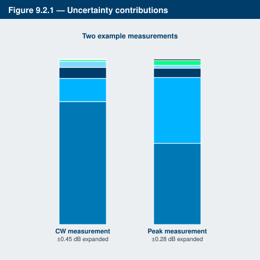

Chapter 9: Measurement Accuracy
RF power meters have long been accepted as accurate measurement standards. How accurate are the power measurements they yield? Calculating the accuracy of average and peak RF power measurements requires more than a glance at a specification sheet. Many users ask "how accurate is the meter." The metrologist asks the better question: what is the uncertainty of this particular measurement? Uncertainty is a quantifiable measurement of where measurement errors are or, more importantly, may be present.
This chapter examines the various sources of measurement uncertainty, describes how they combine to yield a single uncertainty value, and shows two sample uncertainty calculations for typical power-measurement scenarios.
9.1 Introduction to Uncertainty
RF power measurement accuracy depends on a variety of factors derived from the measuring instrument, the device under test (DUT), the characteristics of the signal being measured, the instrument settings, and environmental factors. Calibration, signal frequency, level, modulation, source and load mismatch, and noise all play a role in determining total uncertainty.
Each factor adds its own contribution. Some contributions are large; some are negligible. The "uncertainty terms" combine mathematically to yield a single uncertainty value for a particular measurement. Many of the values vary considerably from one measurement application to the next, even with identical equipment, so there is never a single datasheet value for power-measurement accuracy.
Uncertainty values. When combining uncertainty values, all numbers must be in the same units. Uncertainty is typically given as a fraction or percentage, with 0.0% meaning no contribution to the reading. Sometimes uncertainty values are provided as a logarithmic value, "± x.xx dB". The following formulas convert between percent uncertainty and dB tolerance:
U% = (10^(UdB/10) - 1) × 100, and UdB = 10 × log₁₀(1 + (U% / 100))
Worst-case uncertainty. Uncertainty values for each term are usually specified as worst-case values: the measurement uncertainty due to that particular item will never be greater than the specification. In some cases, "typical" values are also given, useful for understanding the characteristic of that term.
The combined worst-case uncertainty approach is conservative. Worst-case values of each term are added together:
U_WorstCase = U₁ + U₂ + U₃ + … + Uₙ
Most uncertainty terms are independent of one another, so the probability of all of them existing at worst-case conditions simultaneously is extremely small. A more realistic approach, the root-sum-of-squares (RSS) technique, combines the terms to yield a single expected uncertainty value. Each term is squared, the squares are summed, and the square root is taken:
U_RSS = √(U₁² + U₂² + U₃² + … + Uₙ²)
Uncertainty distributions. A problem with the basic RSS method is that it does not account for the fact that the distribution of errors for each term may have a different shape within the worst-case bounds. Some types of errors vary with a normal (Gaussian) distribution, with most errors in a narrow range and fewer errors at larger values. The worst-case limits are typically several standard deviations away. Other errors vary linearly within bounds, yielding a rectangular distribution with equal probability across the range. Other shapes such as U-shaped distributions are possible, often resulting from normal distributions cut off or forced within a range by an adjustment process.
To account for these varying probabilities, the worst-case uncertainty values for each term are scaled by an appropriate constant K based on the term's distribution shape.
| Distribution | K Multiplier |
|---|---|
| Normal | √(1/4) = 0.500 |
| Rectangular | √(1/3) = 0.577 |
| U-shaped | √(1/2) = 0.707 |
The formula for combined RSS uncertainty using worst-case values and distribution shape factors is:
U_RSS = √[(U₁K₁)² + (U₂K₂)² + … + (UₙKₙ)²]
This calculation yields the combined standard uncertainty, U_C, with a confidence level of approximately 68%. To gain higher confidence, the expanded uncertainty is used. A statistical coverage factor of 2 yields an expanded uncertainty with approximately 95% confidence:
U_EXPANDED = 2 × U_C
This is the generally accepted method within the RF power-measurement industry.
9.2 Power Measurement Uncertainty Contributions
There is no standard set of defined uncertainty terms, and different instrument manufacturers may group or name them differently. The following list describes the terms used for computing uncertainty for power measurements with Berkeley Nucleonics peak and CW power meters and sensors.
Instrument Uncertainty. Represents the amplification and digitization uncertainty in the meter, plus internal component temperature drift. Cable and connector loss between the sensor and meter may also be included. In most cases this is small, since absolute errors in the circuitry are calibrated out by field calibration processes (sensor zero, fixed calibration, AutoCal step calibration), leaving only relative linearity errors. Instrument uncertainty is typically a datasheet value.
Calibrator Level Uncertainty. The uncertainty in the calibrator's output level for a given setting, for calibrators maintained in calibrated condition. Typically a single datasheet value for fixed-output (0 dBm) references; varies with level for variable-output calibrators. The value to use depends on the sensor calibration technique. For AutoCal, use the calibrator's uncertainty at the measurement power level. For FixedCal sensors, use the calibrator's uncertainty at the FixedCal level (0 dBm for most sensors). For sensors that are not field-calibrated, the calibrator uncertainty term may be neglected.
Calibrator Mismatch Uncertainty. The mismatch error from impedance differences between the calibrator output and the sensor termination. Calculated from the reflection coefficients of the calibrator (ρ_CAL) and sensor (ρ_SNSR) at the calibration frequency:
Calibrator Mismatch Uncertainty = ±2 × ρ_CAL × ρ_SNSR × 100%
The calibrator reflection coefficient is typically a specification for the calibrator or RF power reference output, sometimes provided as a VSWR. If so, the corresponding reflection coefficient is found in the reference table in Section 10.2 of this guide, or computed:
ρ = (VSWR - 1) / (VSWR + 1)
The sensor reflection coefficient ρ_SNSR is frequency dependent and is provided as a sensor datasheet value.
Source Mismatch Uncertainty. The mismatch error caused by impedance differences between the source output and the sensor termination. For many measurements this is the single largest error term. The source mismatch uncertainty is calculated from the reflection coefficients of the source (ρ_SRCE) and sensor (ρ_SNSR) at the measurement frequency:
Source Mismatch Uncertainty = ±2 × ρ_SRCE × ρ_SNSR × 100%
The source reflection coefficient is a characteristic of the source under test and varies with frequency, sometimes with level. It must be supplied, measured, or estimated.
Sensor Shaping Error. Sometimes called "linearity error." The residual nonlinearity in the measurement after the sensor's output has been linearized and scaled by the calibration and shaping processes. Calibration is typically performed at discrete level steps and extended to all levels via curve-fitting. The shaping error is close to zero at calibration points and increases between them due to imperfections in the curve-fit algorithm. An additional component is due to the sensor's transfer function not being identical at all frequencies. The published shaping error includes terms to account for these deviations. If your measurement frequency is close to the field calibration frequency and your level is close to a field linearity calibration point, it is acceptable to use a value lower than the published uncertainty.
Sensor Temperature Coefficient. Error that occurs when the sensor's temperature has changed significantly from the calibration temperature. Usually specified in dB/°C or similar. The term's value is computed from the temperature difference and scaled to a percent uncertainty. When the measurement is performed at the same temperature as the field calibration, this term cancels to zero.
Sensor Noise. Uncertainty contributed by intrinsic noise that is part of every power measurement. Not necessarily generated within the sensor itself; rather, it is noise from the entire measurement chain. Specified as input-referred noise in dBm or nanowatts. Noise can be reduced by filtering or averaging (Section 8.1). The noise approximates band-limited white Gaussian noise, so its amplitude (and uncertainty contribution) decreases as measurement bandwidth narrows.
Noise Uncertainty = ± Sensor Noise (W) / Signal Power (W) × 100%
Noise error is usually insignificant when measuring at high levels, 25 dB or more above the sensor's minimum power rating.
Sensor Zero Drift. Reading uncertainty from long-term change in the zero-power reading that is not random noise. Increasing filter or averaging will not reduce zero drift. For low-level measurements, control by zeroing the meter just before performing the measurement.
Zero Drift Uncertainty = ± Sensor Zero Drift (W) / Signal Power (W) × 100%
Like sensor noise, zero drift is usually insignificant at 25 dB or more above the sensor's minimum rating. The drift specification sometimes indicates a time interval such as one hour. If the time since the last sensor zero or AutoCal is short, the zero drift is greatly reduced.
Sensor Frequency Calibration Factors. Calfactors correct for sensor frequency-response deviations. Characterized during factory calibration by measuring sensor output at a series of test frequencies across its operating range and storing the ratio of applied power to measured power at each frequency. During measurement, the power reading is multiplied by the calfactor for the current frequency to correct for a flat response.
Calfactors (also called "efficiency factors") are provided as a percent or dB correction. They include uncertainties from standards uncertainty and from measurement uncertainty in the calibration process. Both worst-case and RSS uncertainties are provided for the frequency range of each sensor. If the measurement frequency is between calfactor entries, use the higher of the two corresponding uncertainty figures, or estimate by linear interpolation. If the measurement frequency equals the field calibration frequency, a calfactor uncertainty value of zero may be used, since any absolute error cancels during field calibration.
9.3 Sample Uncertainty Calculations
The following examples show calculations for two measurement scenarios. The first is a CW example using a general-purpose 18 GHz CW dual-diode power sensor (a Model 12118 or similar). The second example shows the same instrument performing a measurement with a peak power sensor (Model 12218 or similar), a typical choice for mid-bandwidth modulated signals such as CDMA.
The figures used in these examples are illustrative and do not apply to every application. Some common-sense assumptions illustrate the fact that uncertainty calculation is not an exact science and requires understanding of specific measurement conditions. The RSS method is itself an estimation method.
Typical Example 1: RF Power Meter with CW Power Sensor
| Measurement Conditions | |
|---|---|
| Source Frequency | 10.3 GHz |
| Source Power | -55 dBm (3.16 nW) |
| Source VSWR | 1.50 (reflection coefficient = 0.20) at 10.3 GHz |
| AutoCal Source | Internal 50 MHz Calibrator |
| AutoCal Temperature | 25 °C |
| Current Temperature | 25 °C |
Assume an AutoCal was performed on the sensor immediately before the measurement. This reduces certain uncertainty terms.
Step 1: Instrument Uncertainty. The figure for the CW series is ±0.20%. Since a portion of this includes temperature drift, instrument uncertainty is ±0.10%, half the published figure.
U_Instrument = ±0.10%
Step 2: Calibrator Level Uncertainty. For the meter's internal 50 MHz calibrator, the spec is ±0.105 dB, or ±2.45% at -55 dBm.
U_CalLevel = ±2.45%
Step 3: Calibrator Mismatch Uncertainty. Calculate using the formula in Section 9.2.
ρ_CAL = 0.024 (50 MHz) ρ_SNSR = (1.15 - 1) / (1.15 + 1) = 0.070 (max VSWR = 1.15 at 50 MHz) U_CalMismatch = ±2 × 0.024 × 0.070 × 100% = ±0.34%
Step 4: Source Mismatch Uncertainty. Calculate using the source and sensor reflection coefficients at the measurement frequency.
ρ_SRCE = 0.20 (at 10.3 GHz) ρ_SNSR = (1.40 - 1) / (1.40 + 1) = 0.167 (max VSWR = 1.40 at 10.3 GHz) U_SourceMismatch = ±2 × 0.20 × 0.167 × 100% = ±6.68%
Step 5: Sensor Shaping Error. For a CW sensor calibrated by AutoCal, assume 1.0%.
U_ShapingError = ±1.0%
Step 6: Sensor Temperature Drift. AutoCal just performed at 25 °C, current temperature 25 °C, so this term is zero.
U_SnsrTempDrift = ±0.0%
Step 7: Sensor Noise. Signal level -55 dBm = 3.16 nW. RMS noise specification 30 pW.
U_NoiseError = ±(30.0e-12 / 3.16e-9) × 100% = ±0.95%
Step 8: Sensor Zero Drift. Datasheet 100 pW. Cut to 50 pW because AutoCal was just performed.
U_ZeroDrift = ±(50.0e-12 / 3.16e-9) × 100% = ±1.58%
Step 9: Sensor Calfactor Uncertainty. No entry for 10.3 GHz. At 10 GHz it is 4.0%. At 11 GHz it is 4.3%. Linear interpolation:
U_CalFactor = [(10.3 - 10.0) × (4.3 - 4.0) / (11.0 - 10.0)] + 4.0 = 4.09%
Step 10: Combined uncertainty.

| Uncertainty Term | U_WorstCase (±%) | K | (U×K)² (%²) |
|---|---|---|---|
| 1. Instrument | 0.10 | 0.500 | 0.0025 |
| 2. Calibrator level | 2.45 | 0.577 | 1.9984 |
| 3. Calibrator mismatch | 0.34 | 0.707 | 0.0578 |
| 4. Source mismatch | 6.68 | 0.707 | 22.305 |
| 5. Sensor shaping | 1.00 | 0.577 | 0.3333 |
| 6. Sensor temperature drift | 0.00 | 0.577 | 0.0000 |
| 7. Sensor noise | 0.95 | 0.500 | 0.2256 |
| 8. Sensor zero drift | 1.58 | 0.577 | 0.8311 |
| 9. Sensor calibration factor | 4.09 | 0.500 | 4.1820 |
Total worst-case uncertainty = 17.19% Sum of squares = 29.936 %² Combined standard RSS uncertainty U_C = ±5.47% Expanded RSS uncertainty (k=2) = ±10.94% (±0.45 dB)
The two largest contributors are source mismatch and sensor calfactor. The expanded uncertainty is approximately half the worst-case value, which is expected when the majority of uncertainty comes from a few sources. If the measurement frequency were lower, those two terms would shrink, and the expanded uncertainty would be even less than half the worst-case. If one term dominated (for example, very low-level measurement with 30% noise uncertainty), the expanded uncertainty would approach the worst-case value.
The expanded uncertainty for this CW measurement is 0.45 dB.
Typical Example 2: RF Power Meter with Peak Power Sensor
| Measurement Conditions | |
|---|---|
| Source Frequency | 900 MHz |
| Source Power | 13 dBm (20 mW) |
| Source VSWR | 1.12 (reflection coefficient = 0.057) at 900 MHz |
| AutoCal Source | 1 GHz Calibrator |
| AutoCal Temperature | 38 °C |
| Current Temperature | 49 °C |
Assume AutoCal was performed earlier in the day. Time and temperature drift play a role.
Step 1: Instrument Uncertainty. Peak series figure is ±0.20%. Use the published figure, since AutoCal was not just performed.
U_Instrument = ±0.20%
Step 2: Calibrator Level Uncertainty. External 1 GHz calibrator spec at 0 dBm is 0.065 dB or 1.51%. Add 0.03 dB / 0.69% per 5 dB step from 0 dBm. 13 dBm = 2.6 steps, rounded up to 3 steps. Total = 1.51% + (3 × 0.69%) = 3.58%.
U_CalLevel = ±3.58%
Step 3: Calibrator Mismatch. ρ_CAL ≈ 0.024 at 1 GHz; ρ_SNSR ≈ 0.024 at 1 GHz from datasheet.
U_CalMismatch = ±2 × 0.024 × 0.024 × 100% = ±0.12%
Step 4: Source Mismatch. ρ_SRCE = 0.057 at 900 MHz; ρ_SNSR ≈ 0.05 at 900 MHz.
U_SourceMismatch = ±2 × 0.057 × 0.05 × 100% = ±0.57%
Step 5: Sensor Shaping Error. AutoCal was used. Assume ±1.0%.
U_ShapingError = ±1.0%
Step 6: Sensor Temperature Drift. Temperature has drifted 11 °C since AutoCal. Sensor temperature coefficient is 0.05 dB/°C, or 1.16% / °C × 11 = 12.7%. This is the worst case but typical drift on a stable sensor will be far smaller. Use 4.0%.
U_SnsrTempDrift = ±4.0%
Step 7: Sensor Noise. At 13 dBm = 20 mW with sensor noise of 50 µW (typical for peak sensors at full bandwidth):
U_NoiseError = ±(50e-6 / 20e-3) × 100% = ±0.25%
Step 8: Sensor Zero Drift. Negligible at this signal level.
U_ZeroDrift = ±0.0%
Step 9: Calfactor Uncertainty. At 900 MHz, calfactor uncertainty is 1.5%.
U_CalFactor = ±1.5%
Step 10: Combined.
| Term | U (±%) | K | (U×K)² (%²) |
|---|---|---|---|
| Instrument | 0.20 | 0.500 | 0.0100 |
| Calibrator level | 3.58 | 0.577 | 4.2667 |
| Calibrator mismatch | 0.12 | 0.707 | 0.0072 |
| Source mismatch | 0.57 | 0.707 | 0.1622 |
| Sensor shaping | 1.00 | 0.577 | 0.3333 |
| Sensor temperature drift | 4.00 | 0.577 | 5.3260 |
| Sensor noise | 0.25 | 0.500 | 0.0156 |
| Sensor zero drift | 0.00 | 0.577 | 0.0000 |
| Calibration factor | 1.50 | 0.500 | 0.5625 |
Total worst-case uncertainty = 11.22% Sum of squares = 10.683 %² Combined standard RSS uncertainty U_C = ±3.27% Expanded RSS uncertainty (k=2) = ±6.54% (±0.28 dB)
In this peak-sensor example, the dominant contributors are calibrator level uncertainty and sensor temperature drift. The expanded uncertainty is 0.28 dB, which is reasonable for a mid-frequency communications measurement.
Engineer's corner. The uncertainty budget is a document, not a feeling. If you cannot write it down, you cannot trust it. Every good measurement system has its budget on file, signed and dated. For modern thermally stabilized sensors such as the Berkeley Nucleonics 12100 series, the temperature-drift term largely vanishes, source mismatch becomes the dominant contributor on most measurements, and a typical expanded uncertainty of 0.20 to 0.25 dB is achievable across the operating range.
Check your understanding
Two quick questions on measurement accuracy. Your answers save on this device.